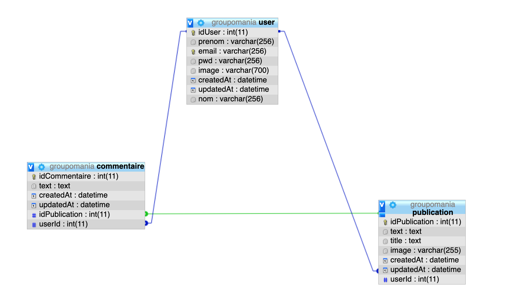
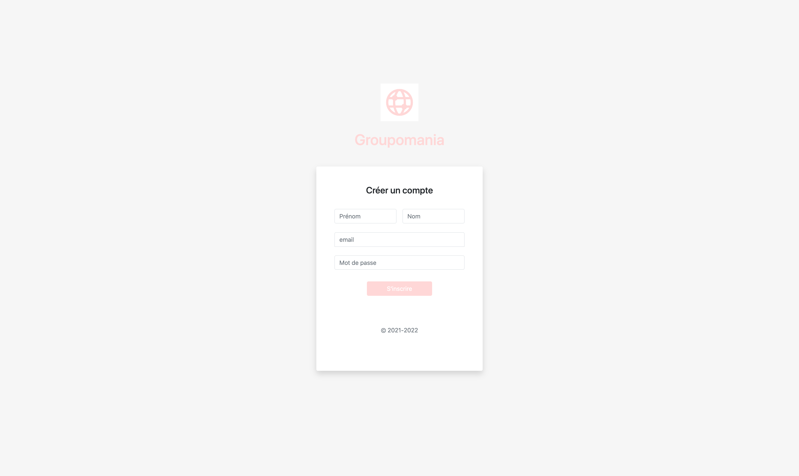
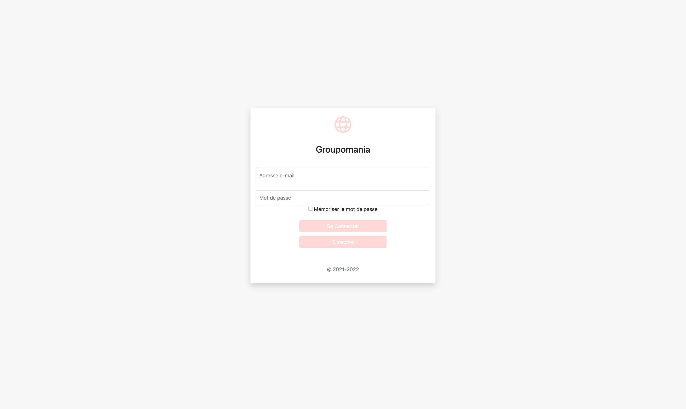
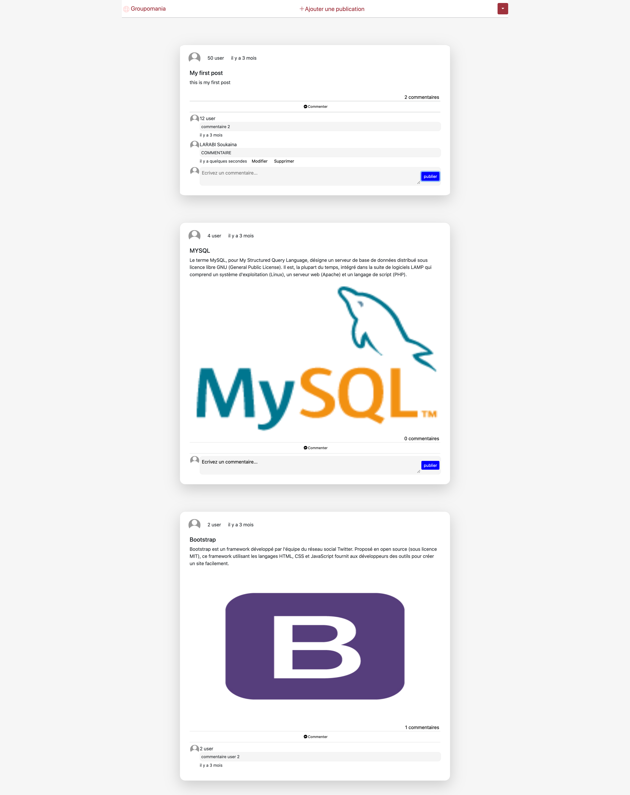
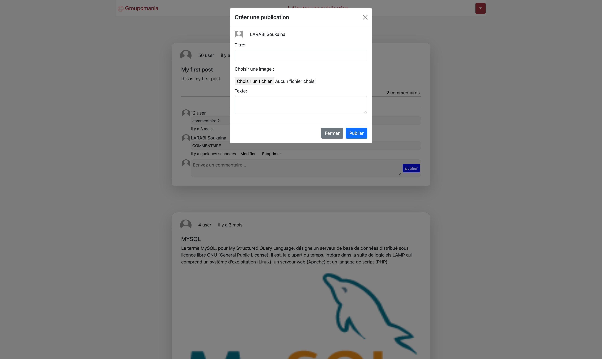
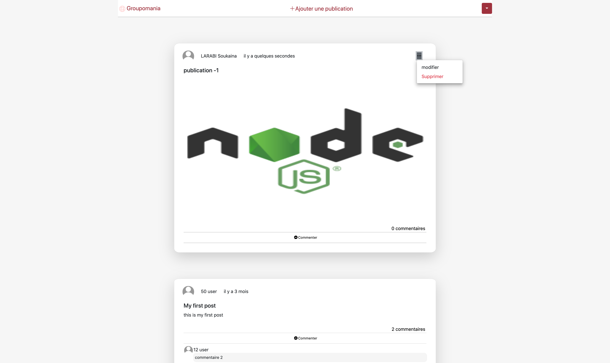

Construire un réseau social interne pour les employés de Groupomania .
Backend:Serveur Node.js,Framework Express,Base de données MYSQL
Frontend: Vue js,axios,moment,Bootstrap
Référencement: Lighthouse
L'architecture de l'application est répartie en trois grands bricks:
Après la réalisation du modèle conceptuel et le modèle logique voila notre modèle physique qui nous montre les différentes relations entre les tables
Ici un commentaire appartient à un utilisateur, une publication appartient aussi à un utilisateur et une publication peut contenir plusieurs commentaires
Pour accéder au réseau social, l'utilisateur devra créer un compte, ce qui l'enregistrera de manière sécurisée dans notre base de données mySQL (email et mot de passe cryptés).
Apres l'inscription l'utilisateur sera rediriger vers la page de connexion pour acceder a la page d'accueil .
Une fois authentifié, l'utilisateur est dirigé vers la page d'accueil ou il récupère toutes les publications les plus récentes avec leurs commentaires.
l'utilisateur a la possibilité de créer une publication qui peut contenir un texte,titre ou une image.
l'utilisateur a la possibilité de modifier et de supprimer juste ses publications en cliquant sur les trois points à droite qui apparaissent justes sur celles qui peuvent les modifier ainsi les supprimer.
 l'utilisateur a la possibilité de commenter n'importe quelle
publication.
L'utilisateur a la possibilité de modifier et de supprimer juste ses
commentaires en cliquant sur modifier ou supprimer qui s'affichent au-dessous du commentaire
juste si l'utilisateur peut les modifier ainsi les supprimer.
l'utilisateur a la possibilité de se déconnecter .
l'utilisateur a la
possibilité de supprimer son compte définitivement du coup si jamais il voudra se reconnecter il
sera obligé de passer par la page d'inscription car son mail n'existera plus dans la base de
données.
Pour vérifier le bon fonctionnement des différentes étapes de l'application, j'ai rédigé un plan de tests unitaires où sont détaillés :
Pour ce projet, j'ai utilisé le logiciel de versionning Git. Retrouvez le code source sur mon repositories GitHub
{kind=link}
{kind=link}
{kind=link}
{kind=link}
{kind=link}
{kind=link}
{kind=link}